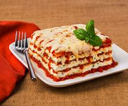

Lasagna

Description
This Lasagna is hearty, delicious, and stunningly photogenic!
Ingredients
- 1 pound Sweet Italian Sausage
- 1 pound Lean Ground Beef
- 1 Large White Onion (diced)
- 5 cloves Garlic (minced)
- 1 (28 ounce) can Tomatoes (crushed)
- 2 (6 ounces) cans Tomato Paste
- 1 (15 ounce) can Tomato Sauce
- ½ cup White Wine
- 2 tablespoons White Sugar
- ½ cup Fresh Basil (chopped)
- 1 teaspoon Fennel Seeds
- 1 teaspoon Ground Oregano
- 1 teaspoon Salt
- ¼ teaspoon Black Pepper (ground)
- ¼ cup Fresh Parsley (chopped)
- 1 pound Lasagna Noodles
- 30 ounces Ricotta Cheese
- 2 tablespoons Fresh Parsley (chopped)
- 1 Large Egg
- 0.12 teaspoon Ground Nutmeg
- 1 pound Mozzarella Cheese (thinly sliced, about 24 slices)
- 1 cup Parmesan Cheese (freshly grated)
Steps
- In a large pot over medium heat, add in ground sausage and ground beef. Use a spoon to break up the meat into small pieces. Add in onion and garlic and cook until meat is well browned, stirring constantly. Stir in sugar, fresh basil, fennel, oregano, 1/2 teaspoon salt, pepper, and 1/4 cup chopped parsley. Pour in crushed tomatoes, tomato paste, tomato sauce, and wine*. Stir well and bring to a simmer. Reduce heat to low and simmer 1-4 hours, stirring occasionall
- Meanwhile, place lasagna noodles into the bottom of a pan. Pour hot tap water directly over the noodles, making sure the pasta is completely immersed in the water. Let them soak for 30 minutes, then drain and discard water.
- In a mixing bowl, combine ricotta cheese with egg, remaining 2 tablespoons parsley, 1/2 teaspoon salt, and nutmeg. Refrigerate until ready to assemble lasagna.
- Preheat oven to 375 degrees. Lightly grease a deep 9x13 pan.
- To assemble, spread about 1 cup of meat sauce in the bottom of the prepared pan. Place 4 noodles on top. Spread with 1/3 of the ricotta cheese mixture. Top with 1/4 of mozzarella cheese slices. Spoon 1 1/2 cups meat sauce over mozzarella, then sprinkle with 1/4 cup parmesan cheese. Repeat layering two more times to create three complete layers. To finish, place a final layer of pasta, topped with another 1 cup of meat sauce to cover the pasta. Top with remaining mozzarella and Parmesan cheese. Cover loosely with aluminum foil.
- Bake in preheated oven for 25 minutes. Remove foil, and bake an additional 25 minutes to allow cheese to brown. Serve hot.